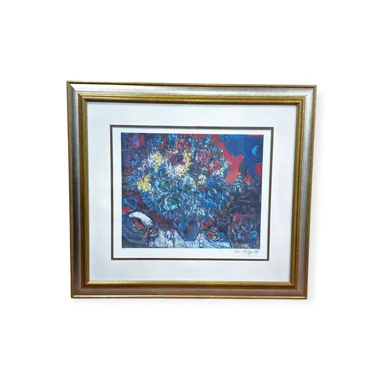
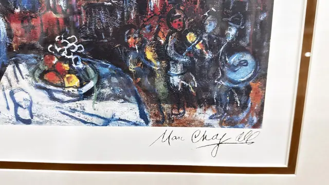
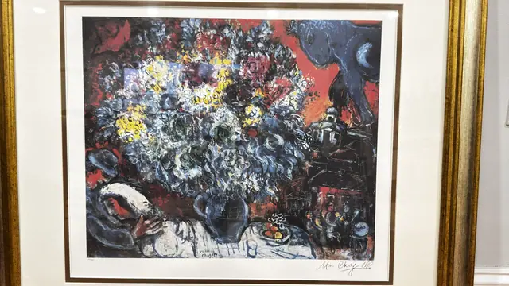

Paintings & Prints
Chagall Bouquet of Flowers and Lovers Print, MARC CHAGALL, Signed in the Plate, Framed, 2001
MARC CHAGALL · published 2000, certified 2001
Price Upon Request



About the Item
MARC CHAGALL. A tumbling bouquet of white, cream, yellow and blue blossom fills the upper two thirds of the sheet, painted with dense broken impasto-like strokes and set against a burning vermilion ground. A blue horned creature leaps at the upper right above a smouldering village with candles and small figures, while a woman in white reclines along the lower edge beside a blue jug and a dish of fruit. The artist's name is lettered into the image itself in black block capitals. Presented on a cream mat with a dark inner band, in a gold moulded frame under glass. Medium: photomechanical colour graphic (offset lithograph) on paper. Signed lower right margin, with a printed name also inside the image, reading "Marc Chagall". Edition: 500 ARABIC, 500 ROMAN NUMERAL ALL WITH FACSIMILE SIGNATURE. Accompanied by a certificate: Certificate of Authenticity for 'BOUQUET DE FLEURS ET AMANTS' by MARC CHAGALL; Medium: PHOTOMECHANICAL GRAPHIC; Year Of Publication: 2000; Edition Size: 500 ARABIC, 500 ROMAN NUMERAL ALL WITH FACSIMILE SIGNATURE; Publisher: REA PRODUCTIONS; Atelier: ART WORLD; Fate of the Plate: DESTROYED; Edition No. left blank; Date August 7, 2001. The certificate is photographed as IMG_8250 in listing B085. Inscribed on the reverse or mount: MARC CHAGALL (printed in black block capitals within the image, lower centre); Marc Chagall (lower right margin). Condition: Glass glare in the photographs; sheet clean with no foxing or tears.
Details
- Creator:
- MARC CHAGALL
- Creation Year:
- published 2000, certified 2001
- Medium:
- photomechanical colour graphic (offset lithograph) on paper
- Edition:
- 500 ARABIC, 500 ROMAN NUMERAL ALL WITH FACSIMILE SIGNATURE
- Period:
- 21St
- Condition:
- Offered in the condition shown in the photographs.
- Reference Number:
- VO-267
- Documentation:
- Certificate of Authenticity for 'BOUQUET DE FLEURS ET AMANTS' by MARC CHAGALL; Medium: PHOTOMECHANICAL GRAPHIC; Year Of Publication: 2000; Edition Size: 500 ARABIC, 500 ROMAN NUMERAL ALL WITH FACSIMILE SIGNATURE; Publisher: REA PRODUCTIONS; Atelier: ART WORLD; Fate of the Plate: DESTROYED; Edition No. left blank; Date August 7, 2001. The certificate is photographed as IMG_8250 in listing B085.
- Gallery Location:
- MARC CHAGALL (printed in black block capitals within the image, lower centre); Marc Chagall (lower right margin)